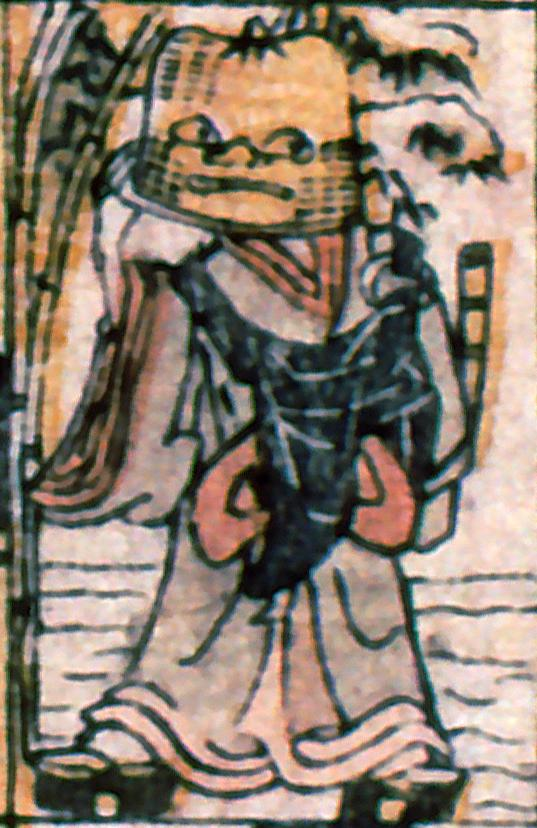

虚無僧姿の化物。頭部が籠になっており、そこに顔が描かれている。
著作者：叢豊丸／出典：親書誌：A5_pushkin_0018：新板化物尽；シンバンバケモノツクシ／日付：2011／資源識別子：A5_pushkin_0018_0011_0000
Copyright (c)2010- International Research Center for Japanese Studies, Kyoto, Japan. All rights reserved.